宮崎県都城市にある
東霧島（つまきりしま）神社は天孫降臨伝説を持つ高千穂峰を囲む
霧島六権現社のひとつである。
つまりこの地方の山岳信仰の拠点のひとつ、ということ。
さぞかし山深い神社なのだろう、と思ったが、行ってみると意外と入り口は平坦だった。
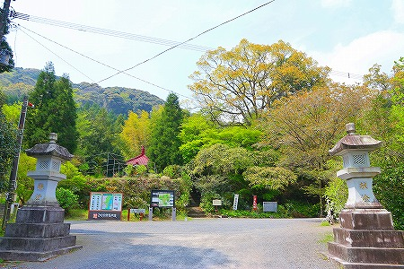
境内に入ってすぐ目に付くのは赤い屋根のお堂。
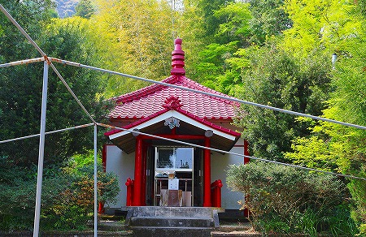
弘法大師を祀る
弘法堂だ。
神社に来たのだが、面白そうなので早くも寄り道してみよう。
堂内には複雑に入り組んだ木の根や幹が奉納されていた。
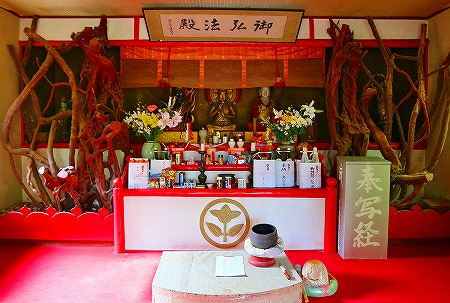
ダークな雰囲気だったが、祭壇の大日如来、弘法大師、不動明王の各像の造作が結構抜けてたので行って来い、な感じでした。
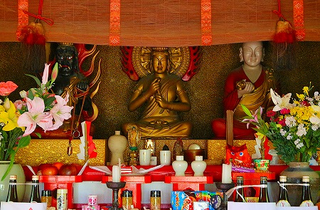
で、神社に向かう。
社域に入ってすぐ目に付くのは
巨大な楠。樹齢は千年だとか。
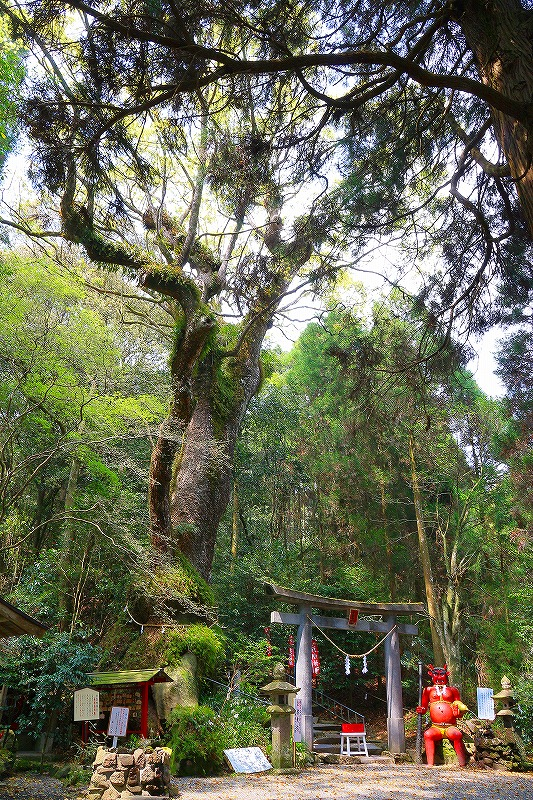
おやおや？鳥居の脇に何やら赤いお方が…
おおお、
コンクリの鬼さんではないか。
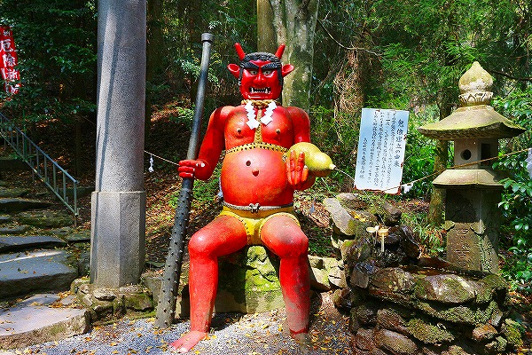
座った状態で人の背丈よりやや大きいくらい。
顔だけが塗りなおされてツヤツヤしている。そして顔が平らなので何だか
お面っぽい。
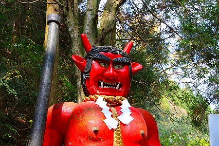
何と言ったらいいのだろう、
鬼が鬼のお面をかぶっているような不自然な感じ。
右手に金棒、左手にはヒョウタンを持っているのだが、そのヒョウタンからは水が流れ出ている。
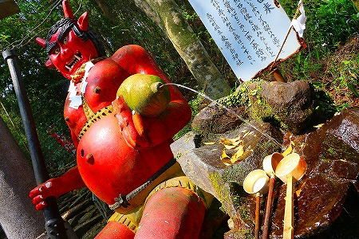
グイッと寄ってみよう。
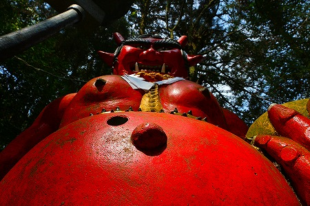
ヘソの脇に穴が開いている。
用途は不明だが、ボタンがはめ込まれてたっぽい。
もしかしたらかつてはボタンを押すと水が流れ出す仕組みだったのかもしれない。
あるいはボタンを押すと鬼の咆哮が鳴り響くとか、立ち上がって金棒をグルグル振り回すとか、遥か彼方の高千穂峰がバックリ二つに割れて中から巨大なニニギノミコトが現れたりするんだろうか…
今度は裏に回ってみる。
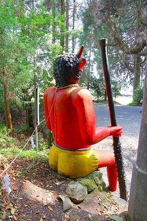 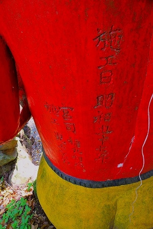
昭和57年施工、とある。
さらに当時の宮司と施工者の名前が刻まれている。
この神社の歴史とは比べようもないが、それでも30年間ここに鎮座しているのか。凄いねー。
さらに近寄ってM字開脚！
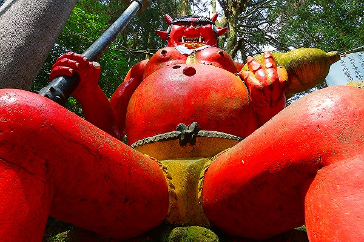
…スミマセン、鬼さん相手に調子に乗りすぎました…
巨大な楠に行ってみよう。根元はトンネル状になっていて潜りぬけられるぞ。
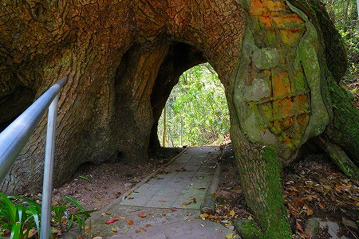
ここを左右三回づつ巡ると無事出産できるのだとか。
出産はしないけど、将来尿路結石が出来てもコロンと安産できるようにとりあえず回っておこう。
洞の中から鬼を見る。
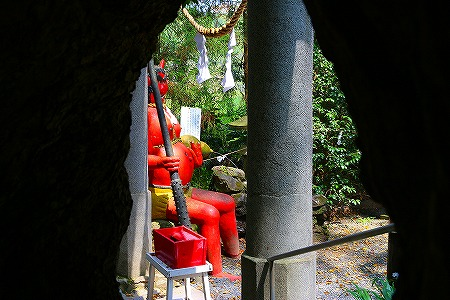
楠の近くには龍が水を吐いていた。
この地に湧き出る龍王神水にちなんだ龍なのだが、小品ながらこの迫力はどうだ。
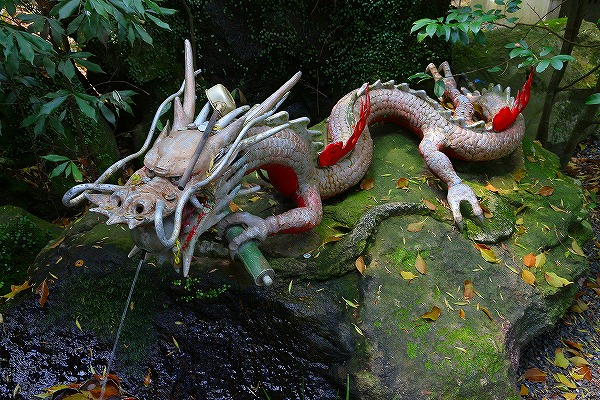
金属製の龍のこの鱗のマチエールをご覧あれ！紛れもない力作じゃないか！
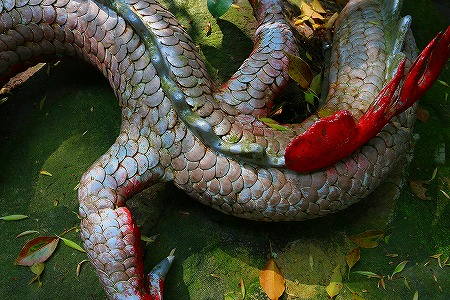
で、さらに隣にはかなりキテるコンクリ像が。
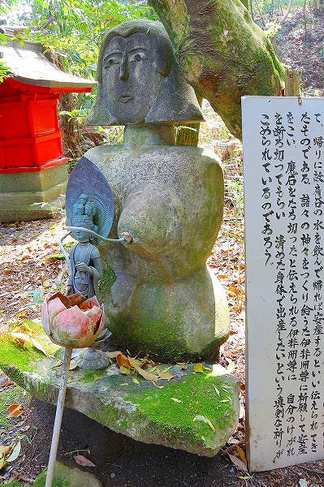
見ればおっぱいから金属製の筒が飛び出している。
隣の看板を見ると「故有谷（ゆやだに）の乳水」なる霊水の説明がある。
つまり、このおっぱいから湧き出ていたのであろうその水が安産に効能あり、の霊水なのだろうか？
それにしてはコンクリの女性像の造形が
アバンギャルドすぎるじゃないか！
…気を取り直してさらに奥へ。
今度は大きな岩が駒寄に囲まれている。その丁寧な祀り方を見る限りこの神社の中でも最重要スポットと見た。
いや、私にとって最重要なのはコンクリの鬼さんなんですけどね。
この石は
神石、あるいは神裂石と呼ばれている。
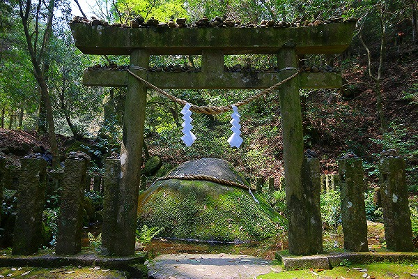
この石、実は回り込んでみると、まるで刀でスパッと切ったように綺麗に石が割れている。
言い伝えによるとイザナギノミコトが亡き妻イザナミノミコトを想い流した涙がこの石なのだとか。
で、その悲しみを断ち切ろうと刀で切ったから石がスパッと切れているのだとか。
神話由来の地だけあって現在でも人気スポットのようだ。
鳥居には数多くの小石が積まれている。神社の鳥居に小石を投げて鳥居の上に乗れば願いがかなう的なアレだ。
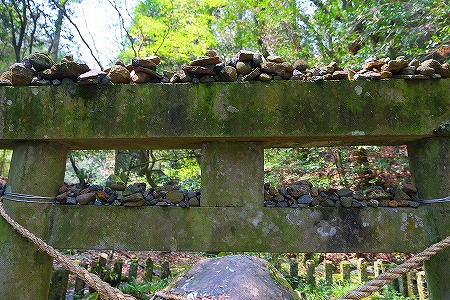
チョット下を潜るのを躊躇してしまうレベルのこんもり具合。
この神石の信仰の篤さと人気がうかがい知れるというものだ。
さらに駒寄の上にも小石が積まれている。
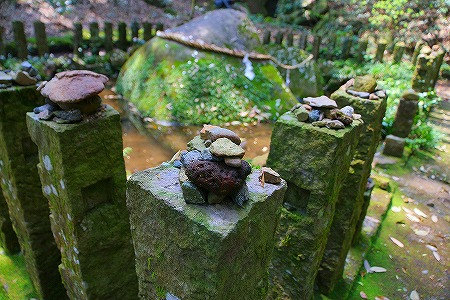
これまたこぼれ落ちそうなレベル。しかもぐるりと全ての駒寄にびっしり積まれている。
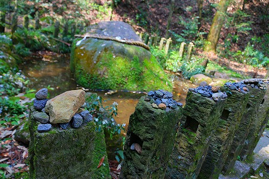
この小石を積んだ人々の願いは何なのかは知る由もないが、大勢の人が真剣に小石を積んだ想いだけがこの場所に痕跡として残されている。
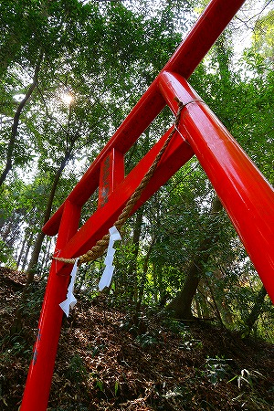
またしてもコンクリ鬼のところに戻る。
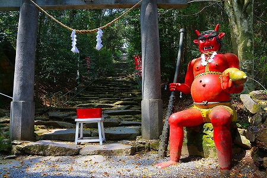
鬼の先には大きな石が乱雑に積まれたような石段が延びている。
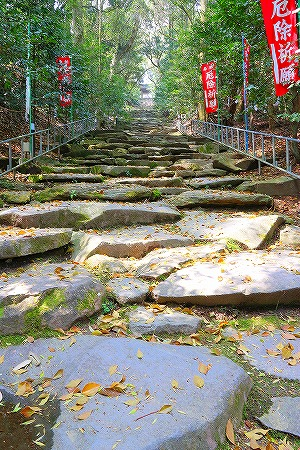
これは鬼が積んだ石段といわれ、鬼が神様に祈願した際に一晩で積んだといわれている。
この
一晩で作った石段伝説はかつて
大分で見たこともあったが九州ではポピュラーなのか?
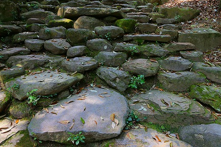
勿論鬼が一晩で作ったというだけあって
「いてまえ、いてまえ、いてこましたれ！」感満点。つまりメチャ歩きにくいのですよ。
そんなイテコマシ石段を登りきると社殿が見えてくる。
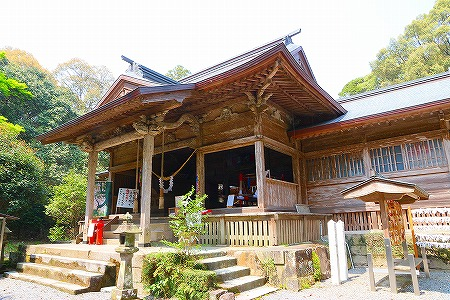
まあ、立派な社殿だこと。
本殿前の柱には龍が巻きついていた。
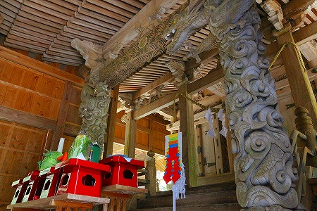
「四百年の大杉に龍神現れる。↑まか不思議御利益大」とのメッセージと共に不思議な写真が。
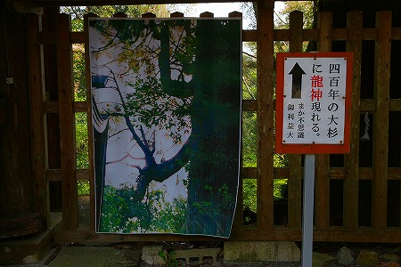
ああ、台風か何かで折れた杉の木の枝先が龍みたいだ、ということなのね。
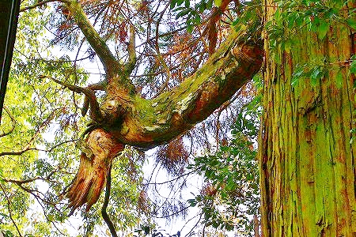
龍と鬼と霊水、おまけに弘法大師まで乱入して、石段同様ガチャガチャした神社であった（もちろん褒め言葉）。
神社の石段でグッタリしていたトカゲ。
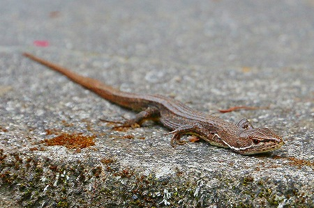
君も将来の龍神候補生なのか？